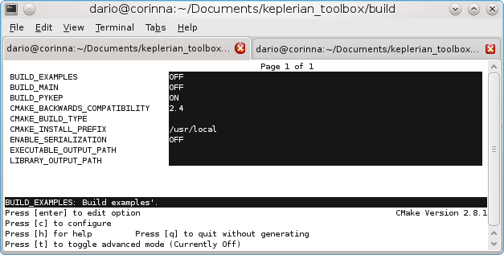
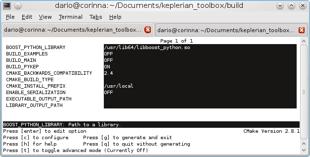

Assuming you have just downloaded the source code following the instructions given, see Download PyKEP, you will have created a directory keptoolbox in your current directory, move there:
cd keptoolbox
You will now need to create a build directory where to build the source code, so:
mkdir build
You can now move there:
cd build
and have ccmake help you select the options that are most suitable for you:
ccmake ../
At this point (after pressing c once to configure) you should be seeing something like this on the screen:
You need to activate the option BUILD_PYKEP. As for the other options, just ignore them, they are useful only for c++ developers / users. Upon pressing ‘c’ again, cmake tries to locate the boost python library necessary to build the code and, in case it is successfull, displays something like
You can now press ‘g’ to generate a make file and exit ccmake utility. You are back to the prompt where you can now type:
make
and:
sudo make install
Watch carefully the message in the terminal where the installation path is given to check that the correct python dist-packages or site-packages directory has been located